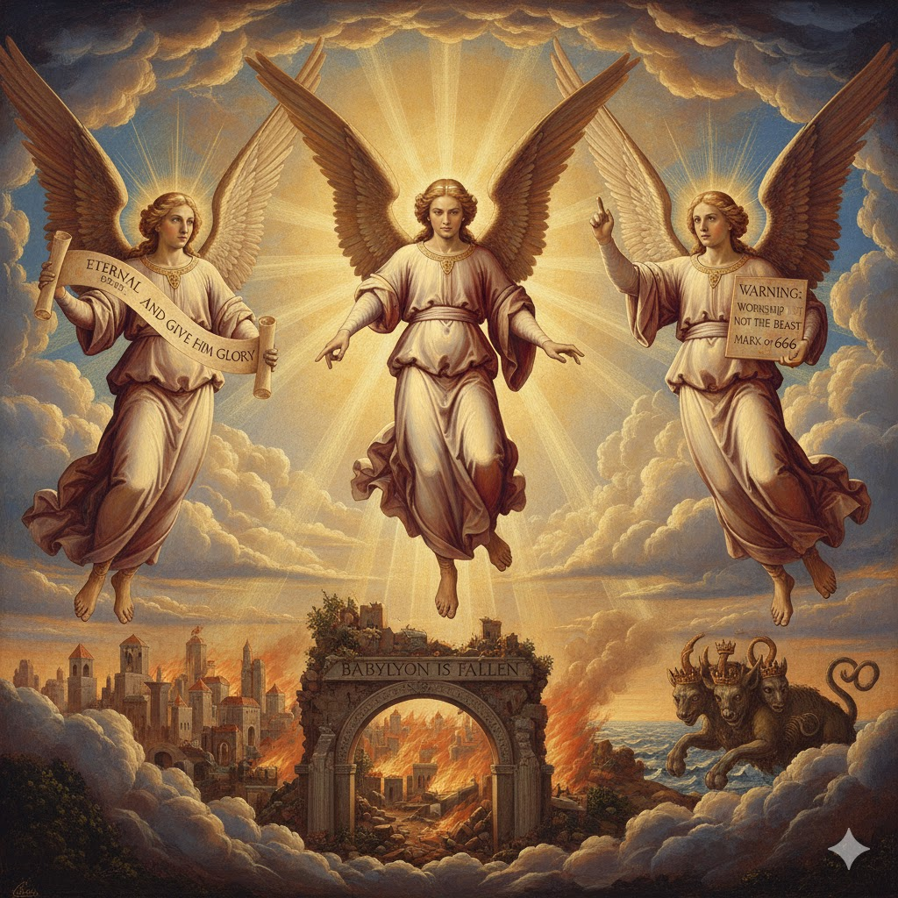
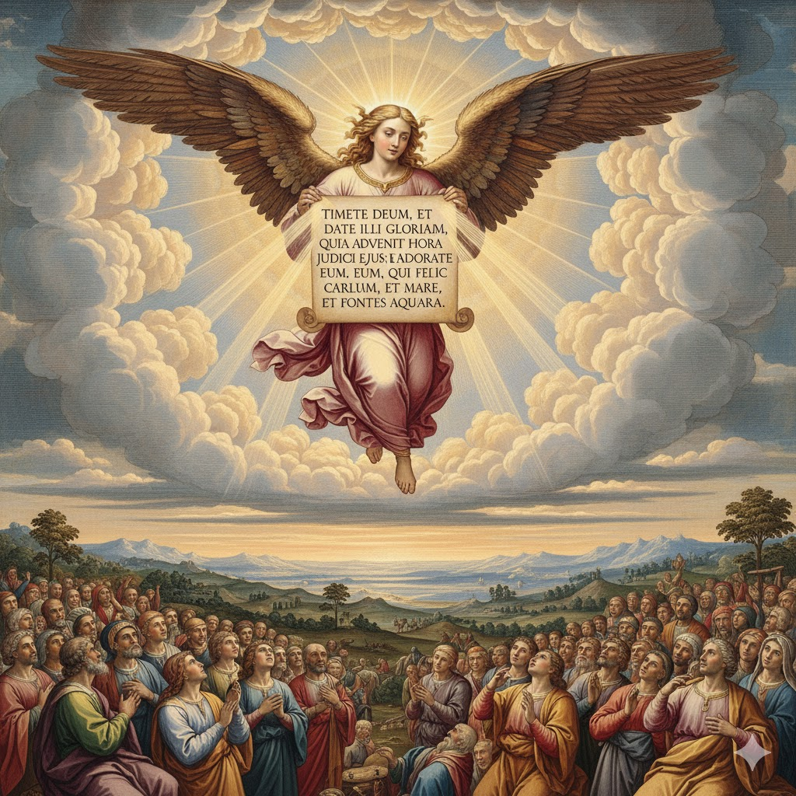
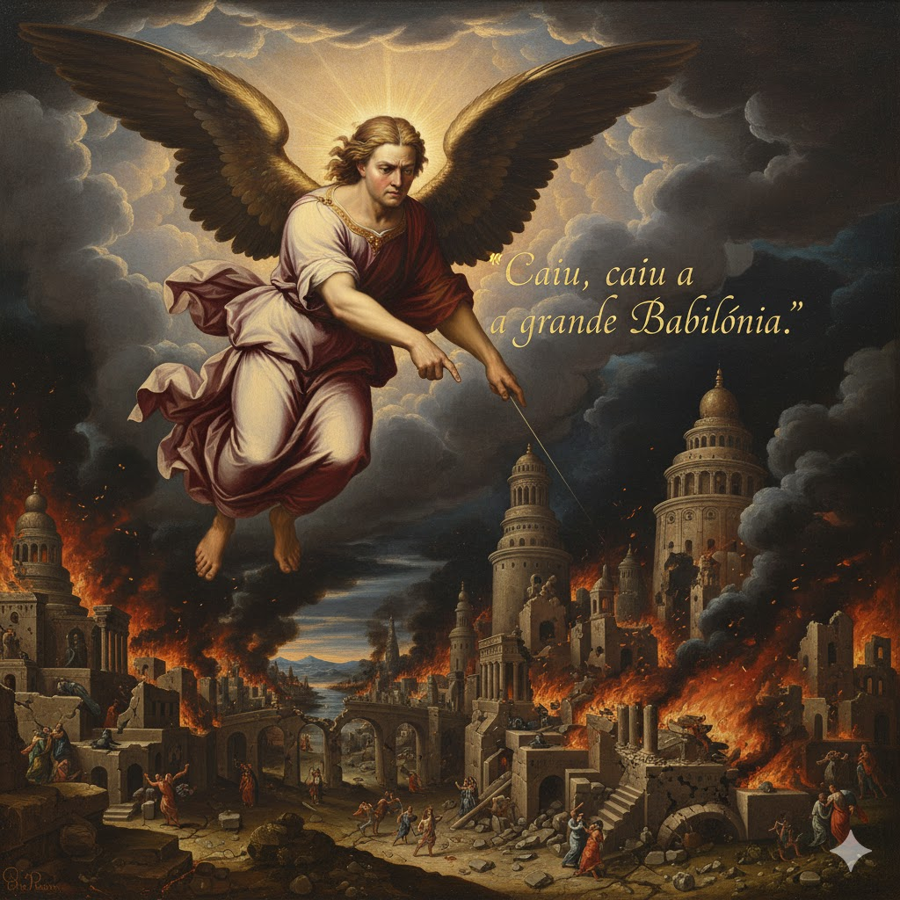
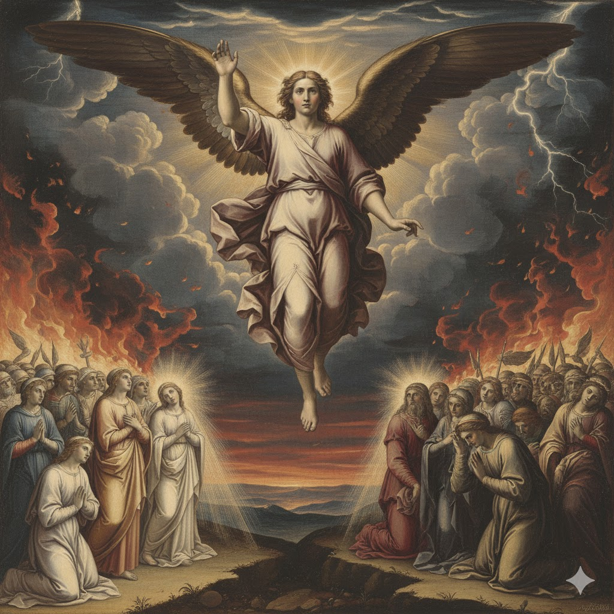
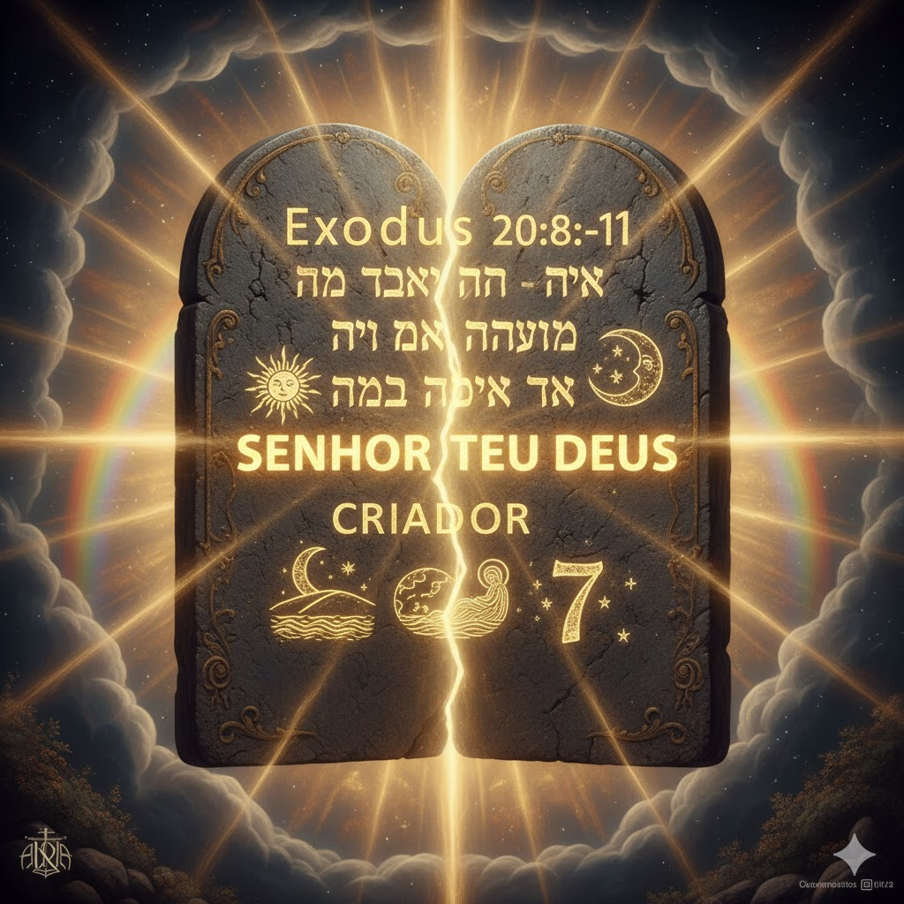
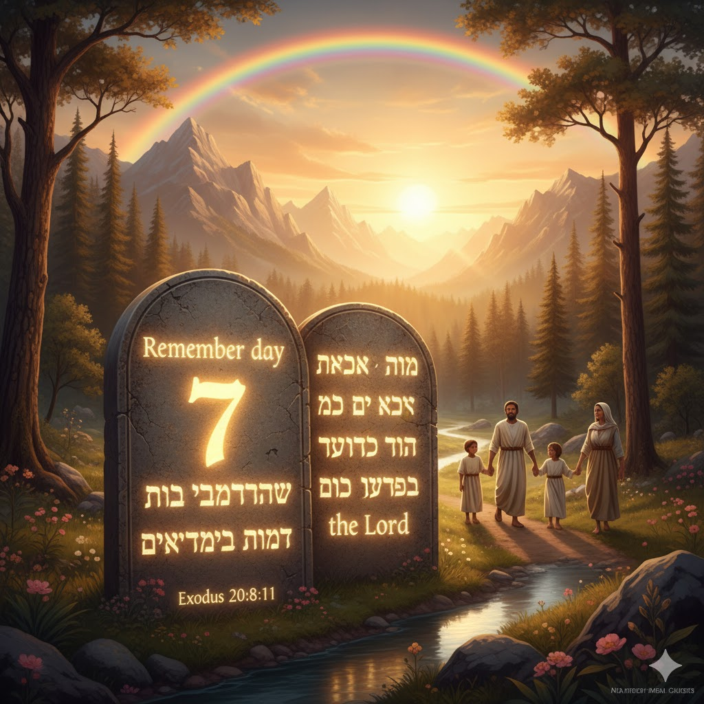

Introdução
Em Apocalipse 14 João emprega uma figura de linguagem em que ele antecipa certos acontecimentos. Encontramos aqui uma estrutura proléptica, na qual primeiro é descrito o grupo dos 144 mil (versos 1-5), para então serem mencionadas as três mensagens angélicas responsáveis pela origem deste grupo (versos 6-12). Tanto a proclamação das mensagens quanto a formação do grupo são descritas como ocorrendo no período final da história humana, que antecede a segunda vinda de Cristo e o juízo final (versos 14-20).
Nesta lição aprenderemos sobre três urgentes mensagens que precisam ser dadas ao mundo antes do regresso de Jesus a esta terra. Veremos quem estes anjos representam e qual o significado de cada mensagem!

Visão Geral dos Três Anjos
👼 1º Anjo

Evangelho Eterno
"Temei a Deus e dai-lhe glória, porque é chegada a hora do seu juízo. Adorai aquele que fez o céu, a terra, o mar e as fontes das águas."
👼 2º Anjo

Queda de Babilônia
"Caiu, caiu a grande Babilônia que tem dado a beber a todas as nações do vinho da fúria da sua prostituição."
👼 3º Anjo

Advertência contra a besta
"Se alguém adora a besta e a sua imagem e recebe a sua marca, também esse beberá do vinho da cólera de Deus."
Primeiro Anjo - O Evangelho Eterno

Segundo Anjo - A Queda de Babilônia
🏛️ Babilônia (Confusão)

Fundação: Ninrode - Desafio a Deus
"Porta dos deuses" → "Confusão"
⛪ Jerusalém (Paz)

Centro do governo terrestre de Deus
Salém (paz) - Melquisedeque
Terceiro Anjo - Advertência contra a Besta
⚖️ Selo de Deus vs. Marca da Besta
| Selo de Deus (Sábado) | Marca da Besta (Domingo) |
|---|---|
| Memorial da criação (Êxodo 20:8-11) | Memorial da ressurreição (tradição humana) |
| Estabelecido por Deus no Éden (Gênesis 2:1-3) | Instituído pela igreja romana |
| Contém nome, título e domínio do Criador | Autoridade papal substitui a autoridade divina |
| Sinal de lealdade a Deus (Ezequiel 20:12) | Sinal de lealdade à besta (Apocalipse 13:16) |
| Guardado pelos fiéis (Apocalipse 14:12) | Imposto aos que adoram a besta |
📜 Sábado - Selo de Deus

"Lembra-te do dia de sábado para o santificar"
⚠️ Domingo - Marca da Besta

Tradição humana substituindo o mandamento divino
👑 Adoração ao Criador

"Adorai aquele que fez o céu e a terra"
Conclusão
Hoje aprendemos que Deus tem uma mensagem de advertência muito especial para cada um de nós. Bondosamente Deus nos oferece Sua graça salvadora através do "Evangelho Eterno" de Jesus.
Cristo está no Santuário Celestial intercedendo e removendo os pecados de Seu povo, "pois é chegada a hora do seu juízo". Ao aceitarmos Jesus como Salvador, aceitamos também os Seus mandamentos, inclusive o quarto que requer a observância do sábado como dia santo e adoração.
Deus nos adverte contra a adoração da besta e da imagem da besta, que ocorre por meio da santificação do domingo. Agora é o momento de você dizer: "Eu e a minha casa serviremos ao Senhor" (Josué 24:15).

📝 MINHA DECLARAÇÃO DE FÉ
Assinale com um X se concordar com as declarações abaixo: